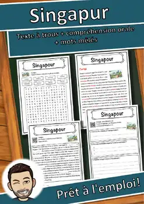
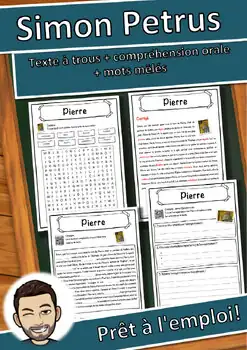
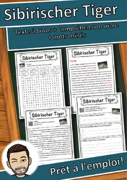
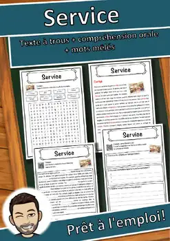
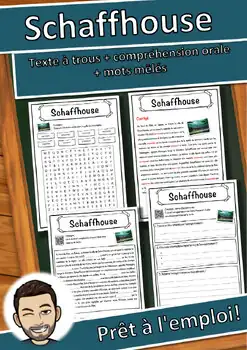
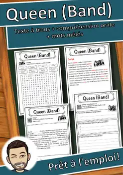
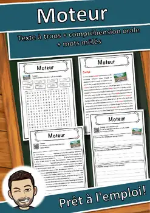
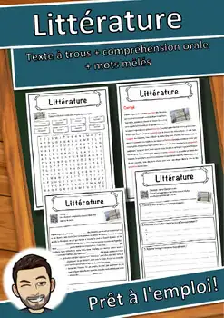

Fiches 8e année
79 fiches d'exercices 8e année en français : lecture, texte à trous et compréhension orale, à imprimer (PDF) avec corrigé.
79 ressources
Thème

Singapur – Fiche de lecture : texte à trous, compréhension orale et mots mêlés

Simon Petrus – Fiche de lecture : texte à trous et compréhension orale

Sibirischer Tiger – Fiche de lecture : texte à trous et compréhension orale

Service – Fiche de lecture : texte à trous, compréhension orale et mots mêlés

Science – Fiche de lecture : texte à trous, compréhension orale et mots mêlés

Schaffhouse – Fiche de lecture : texte à trous et compréhension orale
Sauerkraut – Fiche de lecture : texte à trous, compréhension orale et mots mêlés

Salvador – Fiche de lecture : texte à trous, compréhension orale et mots mêlés

Salomonen – Fiche de lecture : texte à trous, compréhension orale et mots mêlés
Révolution de Mars – Fiche de lecture : texte à trous et compréhension orale
Révolution – Fiche de lecture : texte à trous, compréhension orale et mots mêlés

Règle – Fiche de lecture : texte à trous, compréhension orale et mots mêlés

Rokoko – Fiche de lecture : texte à trous, compréhension orale et mots mêlés

Rosen – Fiche de lecture : texte à trous, compréhension orale et mots mêlés

Robin Hood – Fiche de lecture : texte à trous, compréhension orale et mots mêlés

Recycling – Fiche de lecture : texte à trous, compréhension orale et mots mêlés

Raubtiere – Fiche de lecture : texte à trous, compréhension orale et mots mêlés

Querflöte – Fiche de lecture : texte à trous, compréhension orale et mots mêlés

Queen (Band) – Fiche de lecture : texte à trous et compréhension orale

Pilger – Fiche de lecture : texte à trous, compréhension orale et mots mêlés

Pharmacie d'officine – Fiche de lecture : texte à trous et compréhension orale

Pfote – Fiche de lecture : texte à trous, compréhension orale et mots mêlés

Peking – Fiche de lecture : texte à trous, compréhension orale et mots mêlés

Orthodoxe Kirche – Fiche de lecture : texte à trous et compréhension orale

Organisation – Fiche de lecture : texte à trous et compréhension orale

Médecin – Fiche de lecture : texte à trous, compréhension orale et mots mêlés

Intelligence – Fiche de lecture : texte à trous et compréhension orale

Programmieren – Fiche de lecture : texte à trous et compréhension orale

Printemps – Fiche de lecture : texte à trous, compréhension orale et mots mêlés

Phosphor – Fiche de lecture : texte à trous, compréhension orale et mots mêlés

Grève – Fiche de lecture : texte à trous, compréhension orale et mots mêlés
Forêt du Haut-Palatinat – Fiche texte à trous et compréhension orale

Champ – Fiche de lecture : texte à trous, compréhension orale et mots mêlés

Parti socialiste suisse – Fiche texte à trous et compréhension orale

Osmanisches Reich – Fiche de lecture : texte à trous et compréhension orale

Oldenbourg – Fiche de lecture : texte à trous, compréhension orale et mots mêlés

Mus – Fiche de lecture : texte à trous, compréhension orale et mots mêlés

Moteur – Fiche de lecture : texte à trous, compréhension orale et mots mêlés

Martin Luther – Fiche de lecture : texte à trous et compréhension orale

Maladie d'Alzheimer – Texte à trous, compréhension orale et mots mêlés

Lorelei – Compréhension de lecture : texte à trous, écoute et mots mêlés

Littérature – Compréhension de lecture : texte à trous, écoute et mots mêlés

Kleidung – Compréhension de lecture : texte à trous, écoute et mots mêlés

Kaliningrad – Compréhension de lecture : texte à trous, écoute et mots mêlés

Johannes Kepler – Compréhension de lecture : texte à trous, écoute et mots mêlés

Jeanne d'Arc – Compréhension de lecture : texte à trous, écoute et mots mêlés

Japon – Compréhension de lecture : texte à trous, écoute et mots mêlés

Heligoland – Compréhension de lecture : texte à trous, écoute et mots mêlés
Aucune ressource trouvée – essaie un autre mot ou un autre filtre.